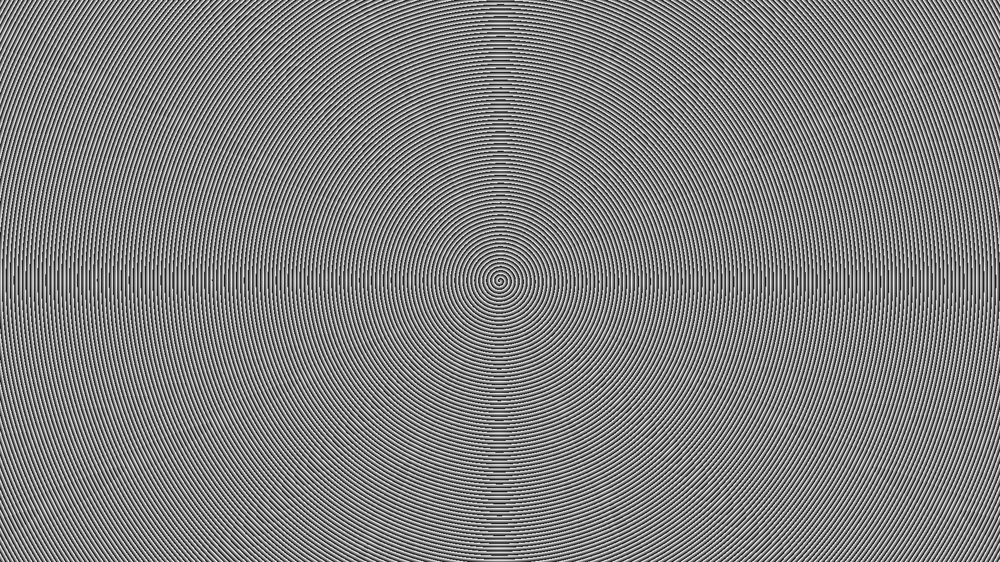
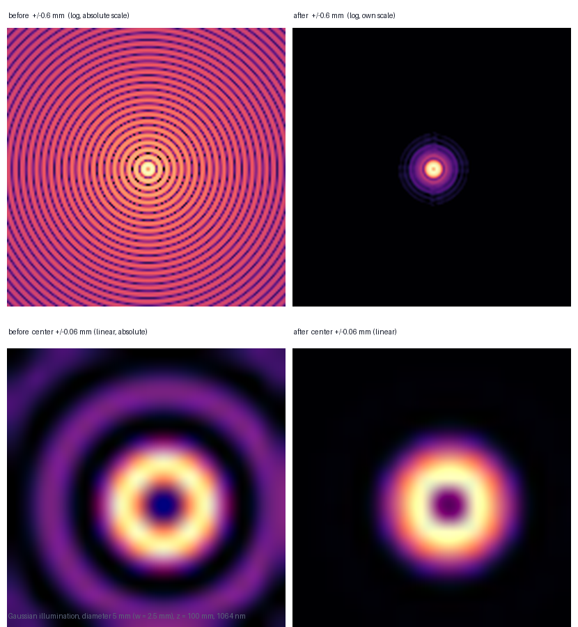

对一张 1920×1080 SLM 螺旋锥透镜（拓扑荷 ℓ=+1，等效锥角 1°） 的相位图，用径向相位参数化 + 伴随梯度做逆设计优化。 z = 100 mm 处主瓣能量占比从 3.06% → 87.9%（×28.7）， 第一旁瓣 −4.5 dB → −15.5 dB。
一句话：均匀锥面波的自干涉产生旁瓣环，优化锥角分布让光线汇聚到主瓣。
螺旋锥透镜（spiral axicon）结合锥透镜的线性径向相位与螺旋相位 ℓ·θ， 产生带轨道角动量的贝塞尔光束。理想贝塞尔光束主瓣外有无限旁瓣环， 能量分散；实际有限孔径下旁瓣占了大部分能量。
直接切趾（apodization）会牺牲能量。更好的办法是把相位图本身作为优化变量， 让传播算子的伴随梯度告诉我们"改哪个像素能让主瓣能量增加"， 再用梯度下降迭代。这就是伴随梯度逆设计。
相位参数化为径向对称曲线 δ(r)（1103 个节点），而非逐像素优化。 螺旋项 ℓ·θ 保持不变，只优化径向修正。这样变量数从 200 万降到 1103， 且梯度可通过伴随法解析求解（有限差分校验偏差 < 0.01%）。
螺旋锥透镜相位图，1920×1080
径向相位 δ(r)，伴随梯度
z=100mm 贝塞尔光斑
系统参数与优化目标函数。
| 环节 | 参数 | 说明 |
|---|---|---|
| 波长 | 1064 nm | 近红外 |
| SLM | 1920×1080, 8 µm/px | 有效区 15.36×8.64 mm |
| 等效锥角 | α = 1.0000° | 环带周期 30.48 µm |
| 入射 | 高斯 D=5mm, 200 mW | 峰值 20.37 mW/mm² |
| 传播 | 带限角谱法 z=100mm | 网格 2048×1208 |
| 优化变量 | δ(r), 1103 节点 | 径向线性插值 |
| 目标函数 | J = ∫_{r| 主瓣 (r<37.2µm) 能量占比 | |
优化前/后 z=100 mm 光斑对比，高斯照明 D=5 mm，入射 200 mW。


| 指标 | 优化前 | 优化后 | 变化 |
|---|---|---|---|
| 峰值强度 | 2922.6 mW/mm² | 79512.7 mW/mm² | ×27 |
| 第一旁瓣 | −4.49 dB | −15.49 dB | −11.0 dB |
| 主瓣内功率 | 6.12 mW | 175.8 mW | ×28.7 |
| 主瓣能量占比 | 3.060 % | 87.90 % | ×29 |
| 条件 | 峰值 | 第一旁瓣 | 主瓣功率 |
|---|---|---|---|
| 高斯 D=5.0 mm（设计值） | 79512.7 | −15.49 dB | 175.8 mW |
| 高斯 D=3.6 mm | 58697.6 | −8.19 dB | 157.0 mW |
| 高斯 D=7.0 mm | 99684.9 | −18.97 dB | 173.5 mW |
| 平顶照明 | 70164.3 | −5.04 dB | 87.6 mW |
径向参数化 + 伴随梯度 + Adam 的三步优化链路。
相位形式 φ(r,θ) = −k·sinα·r + ℓ·θ + δ(r)，螺旋项 ℓ=+1 不变。 δ(r) 用 1103 个径向节点线性插值表示，节点间隔 1 个 SLM 像素（8 µm）。
目标 J 对节点的梯度通过伴随法求解：∂J/∂φ(s) = (2/D)·Im[E*(s)·P†(χU)(s)]， 其中 χ 为主瓣掩模，P† 为反向传播算子。像素梯度经插值矩阵映射到 1103 节点。 有限差分校验偏差 < 0.01%。
学习率 0.05，迭代 200 次，最大化主瓣能量占比 J。 优化后局部等效锥角随半径近似线性增长，使整片孔径光线汇聚到 r₀≈13 µm 圆环。
| 项目 | 逐像素优化 | 本复现（径向参数化） | 影响 |
|---|---|---|---|
| 变量数 | ~200 万 | 1103 节点 | 优化快、稳定 |
| 梯度 | 数值或自动微分 | 伴随法解析 | 精确、可校验 |
| 对称性 | 不保证 | 强制径向对称 | 符合贝塞尔物理 |
| 鲁棒性 | 易过拟合 | 对束腰±30%不敏感 | 工可移植 |
Python 3.9+，numpy + Pillow，两条命令完成优化与报告。
# 1. 装依赖 pip install numpy Pillow # 2. 重画相位图、基线计算、优化、验证 cd code python run_gauss.py # 3. 生成 HTML 报告与全部图表 python run_report_gauss.py
@article{matsushima2009band,
title = {Band-limited angular spectrum method for numerical
simulation of free-space diffraction},
author = {Matsushima, Kyoji and Shimobaba, Tomoyoshi},
journal = {Applied Optics},
volume = {48},
number = {32},
pages = {6258--6266},
year = {2009}
}
本复现为独立实现。传播模型采用带限角谱法（Matsushima, 2009）， 伴随梯度逆设计为通用方法学，应用于螺旋锥透镜旁瓣抑制。 43 条参考文献在仓库 docs/references.md 中经 Crossref DOI 逐条核验。 仅用于学术研究与学习交流。